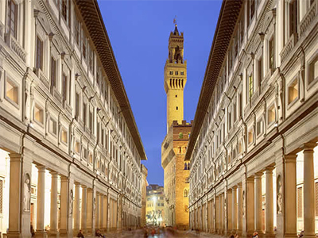
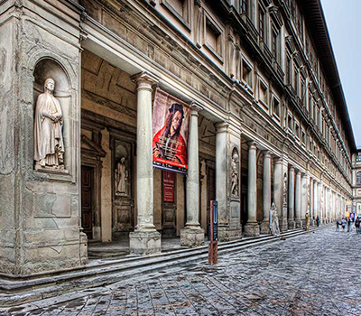
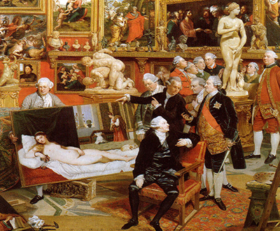
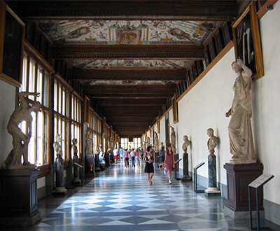

Osnovni podaci:
| Naziv: | Galerija Uffizi |
|---|---|
| Adresa: | Piazzale delgi Uffizi, 6 Firenca |

Galerija Uffizi (tal. Galleria degli Uffizi) se nalazi u Palazzo degli Uffizi, palača u Firenci, a predstavlja jednu od najstarijih i najslavnijih muzeja umjetnosti u svijetu. Nalazi se na koordinatama: 43°46′6.38″ N 11°15′21.24″ E
Palača Uffizi je pod jednim krovom ujedinila administrativne urede, sud i državni arhiv (Archivio di Stato).
Danas je Uffizi jedna od najpopularnijih turističkih atrakcija Firence. Na vrhuncu sezone (osobito u srpnju), čekanje u redu na ulazak može trajati i do pet sati. Posjetitelji koji su unaprijed rezervirali karte čekaju mnogo manje.


Palaču je započeo graditi Giorgio Vasari 1560. g. za Cosima Medicija kao ured Firentinskih upravitelja — odatle joj i ime "uffizi" ("uredi"). Gradnju su po Vasarijevim nacrtima nastavili Alfonso Parigi i Bernardo Buontalenti, te su je završili 1581. g. Dvorište cortile je dugo i usko, te se svojom dorskom kolonadom otvara prema rijeci Arno čime se uokviruje prostor a da se ne zatvara.
Povjesničari umjetnosti smatraju da je to najraniji primjer organizirane ulične panorame u Europi. Vasari, koji je bio i slikar i arhitekt, naglasio je perspektivnu dužinu usklađujući krovne istake pročelja s neprekinutim istakama između katova, kao i tri neprekinute stube na kojima počiva prednja fasada palače.
Palača Uffizi je pod jednim krovom ujedinila administrativne urede, sud i državni arhiv (Archivio di Stato). Cosimo I., nadvojvoda Toskane, uredio je da najbolja djela u kolekciji obitelji Medici dospiju u tzv. piano nobile (Plemeniti kat). Danas ova izvanredna remekdjela, ujedinjena s djelima iz kolekcije još jednog nadvojvode - Francesca I., čine glavnu atrakciju u muzejskom arhivu.
S vremenom, susjedni dijelovi palače su uključeni u izložbeni prostor za ostale slike i skulpture koje su naručili Medici. Nakon što je obitelj Medici nestala, djela koja su bila u njihovom vlasništvu, prema uvjetima slavnog Patto di famiglia koji je objavila Anna Maria Lodovica, posljednja baštinica obitelji Medici, jedan od prvih modernih muzeja je ustanovljen. Galerija je povremeno otvarana posjetiteljima od 16. st., a 1765. g. je službeno otvorena javnosti


Zbog veličine kolekcije neka od djela su proslijeđena u druge Firentinske muzeje. Npr. Neke slavne skulpture se danas nalaze u muzeju Bargello. U tijeku je projekt proširenja muzejskog izložbenog prostora sa 6,000 metara² na skoro 13,000 metara², čime će se omogućiti da se vide neka djela koja su bila u skladištu.
Godine 1993. auto-bomba je eksplodirala u Via dei Georgofili i oštetila dijelove palače ubivši petoro ljudi. Najveću štetu pretrpjela je soba Niobe; te njene klasične skulpture i neoklasični interijer koji je kasnije obnovljen, ali njene freske su bile nepopravljive. Identitet bombaša nije nikad utvrđen iako
| Naziv: | Galerija Uffizi |
|---|---|
| Adresa: | Piazzale delgi Uffizi, 6 Firenca |